EFTfitter.jl - Plotting Tutorial
EFTfitter includes several recipes for plotting its datatypes using Plots.jl
using EFTfitter
using BAT
using IntervalSets
using Distributions
using Plotswe use the inputs from the basic tutorial:
include("tutorial_inputs.jl")
model = EFTfitterModel(parameters, measurements, correlations)
posterior = PosteriorDensity(model)
algorithm = MCMCSampling(mcalg = MetropolisHastings(), nsteps = 10^5, nchains = 4)
samples = bat_sample(posterior, algorithm).result;Note: All plots generated with the following plot recipes can be customized using the series attributes, axis attributes, subplot attributes and plot attributes
Plotting Observables
Plotting an Observable object:
plot(Observable(xsec1), (C1=0, C2=-1:0.01:1))When plotting an Observable from the EFTfitterModel, it can be accessed in different ways:
plot(get_observables(model).xsec1, (C1=0, C2=-1:0.01:1))
plot(get_measurements(model).Meas1.observable, (C1=0, C2=-1:0.01:1))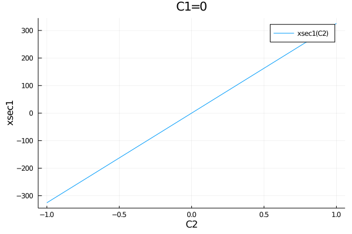
If the model has many parameters, it can be convenient to pass the paramter that should be plotted together with as a NamedTuple with default values for all parameters.
default_parameters = (C1=1, C2=0)
plot(get_observables(model).xsec1, (C2=-1:0.01:1,), default_parameters)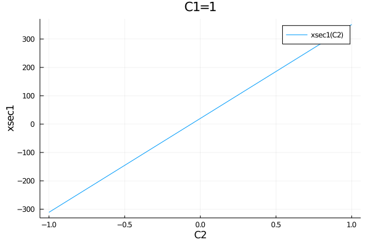
The second argument in this function overwrites the corresponding default parameters, so it is also possible to pass multiple parameters:
plot(get_observables(model).xsec1, (C2=-1:0.01:1, C1=2.3), default_parameters)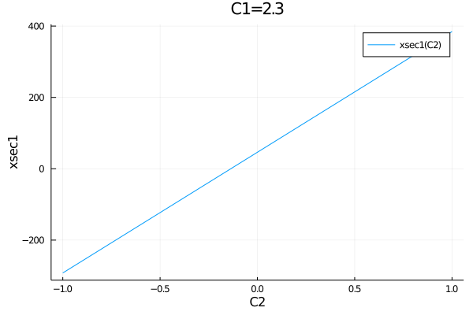
All observables of a model can easily be plotted in one plot:
p = plot()
for meas in get_measurements(model)
p=plot!(meas.observable, (C1=0, C2=-1:0.01:1), ylabel="prediction")
end
p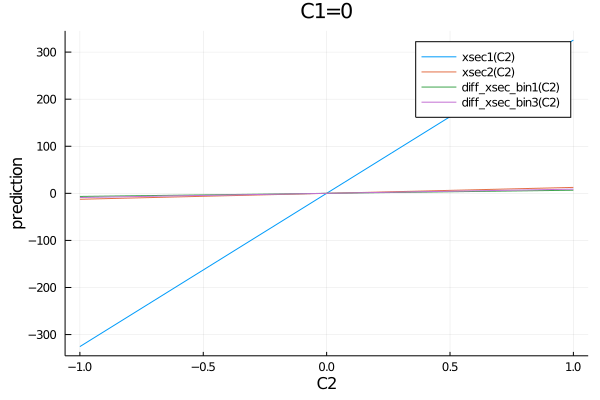
When plotting observables, the default title contains the values of the fixed parameters. In case the title is too long for one line, linebreaks can be inserted using the keyword titlewidth. e.g.:
plot(get_observables(model).xsec1, (C1=-10:0.01:10, C2=0, C3=100, C4=200), titlewidth=13)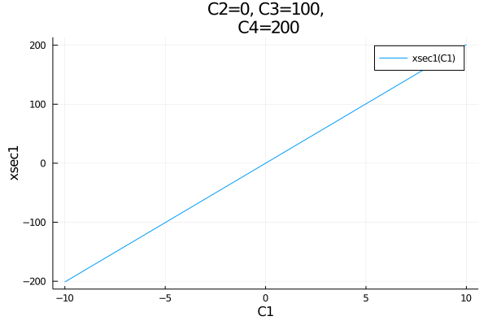
Plotting Measurements
Measurement objects can be plotted on top of the observables as a horizontal line with an uncertainty band:
plot(get_measurements(model).Meas1.observable, (C1=0, C2=-0.2:0.01:0.2))
plot!(measurements.Meas1)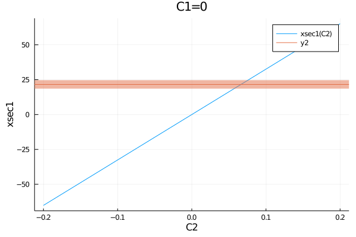
However, when plotting the measurements of the EFTfitterModel, the following syntax is preferred as it supports showing the names of the measurments in the legend:
plot(get_measurements(model).Meas1.observable, (C1=0, C2=-0.2:0.01:0.2))
plot!(get_measurements(model), :Meas1)
The uncertainty typed to be plotted can be specified:
plot(get_measurements(model).Meas1.observable, (C1=0, C2=-0.2:0.01:0.2))
plot!(get_measurements(model), :Meas1, uncertainties=(:stat, :another_unc))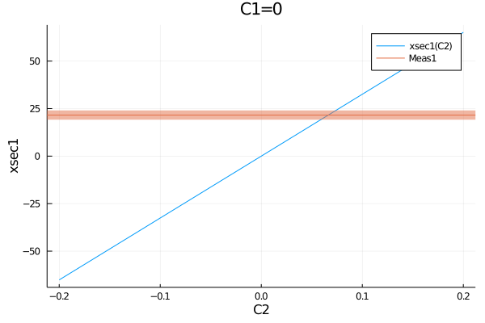
When mutliple types of uncertainties are given, the sum of the squares is used as the total uncertainty. By default, all uncertainties included in the EFTfitterModel are used.
Plotting MeasurementDistributions
MeasurementDistributions can be plotted for fixed parameters:
plot(get_measurement_distributions(model).MeasDist.observable, (C1=1.2, C2=0))
plot!(get_measurement_distributions(model), :MeasDist)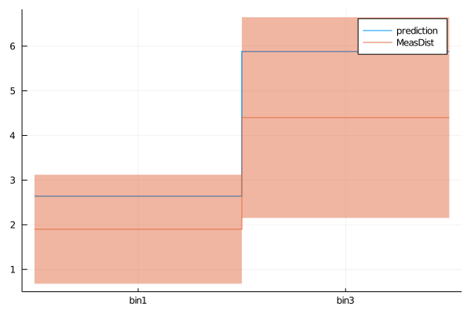
alternative plotting style for measurement distributions:
plot(get_measurement_distributions(model).MeasDist.observable, (C1=1.2, C2=0))
plot!(get_measurement_distributions(model), :MeasDist, st=:scatter)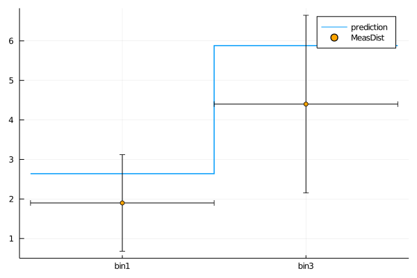
Also for MeasurementDistributions the uncertainty types to be plotted can be specified. The names of the bins can be customized using the bin_names keyword.
plot(get_measurement_distributions(model).MeasDist.observable, (C1=1.2, C2=0))
plot!(get_measurement_distributions(model), :MeasDist, st=:scatter, uncertainties=(:stat,), bin_names=("First bin", "Second bin"))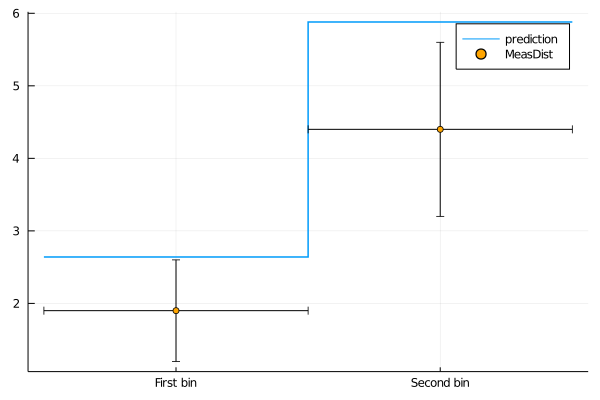
Plotting 1D Intervals
Default plot of the smallest 1D intervals containing 90% posterior probability:
plot(samples, 0.9)
Default settings for keywords:
plot(samples, 0.9,
parameter_names = get_parameter_names(maybe_shaped_samples), # Array of String with the names of the parameters
y_positions = collect(1:length(parameter_names))*-1, # y-positions of the interval lines
y_offset = 0, # offest on the y-axis, helpful when plotting multiple samples on top of each other
bins = 200, # number of bins for calculating smallest intervals
atol = 0,) # merge intervals that are seperated less then atol (especially helpful when using a high number of bins)helpful keyword arguments: msc = markerstrokecolor: color of the interval lines msw = markerstrokewidth: linewidth ms = markersize: size of caps
Customized 1D interval plot:
p = plot(samples, 0.9, bins = 400, atol=0.01, y_offset=-0.1, label = "Samples A")
p = plot!(samples, 0.9, bins = 100, atol=0.05, y_offset=0.1, msw = 5, ms=8, msc=:red, label = "Samples B")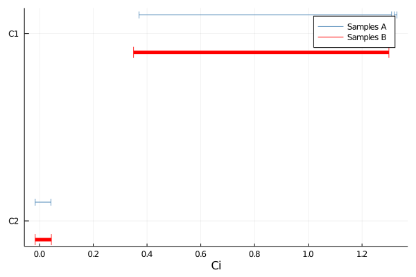
This page was generated using Literate.jl.